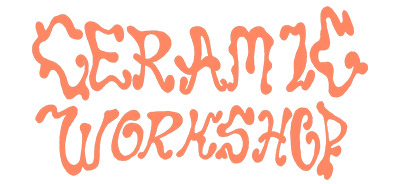
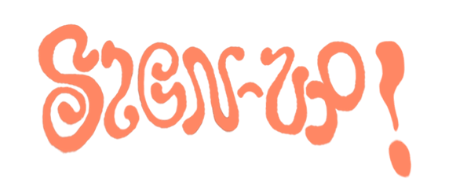

with Im Not Messy Im Creative
THE BEST Ceramic Workshops in Lisbon starts on 20th & 22nd of August at my studio in Cosmos Campolide.
These Classes are held in the private and cosy studio in an old and typical association in Campolide.
Cosmos.Cac / Campolide Atlethico Clube, is an old sports association, cultural-center with a bar & exhibition space.
Maximum capacity per class is 5 people which makes these classes a unique and intimate experience.
A handbuilding class in a fun, relaxed and creative enviroment.
You will learn or not learn how to:
- Develop your creative ideas.
- Make weird sculptures and utilities.
- Mix engobes & paint obscure patterns.
And other things you would not learn elsewhere 😊
V
Classes are held every week, but you sign up to four/eight classes at a time.
This way you will be able to follow up on your pieces.
And learn all the steps of the process.
TIMES:
Saturdays 12 PM - 2 PM
Mondays 7 PM - 9 PM
PRICE:
4 Classes 140 € (Including all materials & 2 kilns)
8 Classes 200 € (Including all materials & 2 kilns)
IINCLUDING:
Materials (Clay, Paint,Tools), 2 x Kilns, Valuable time of teacher & sometimes wine.
